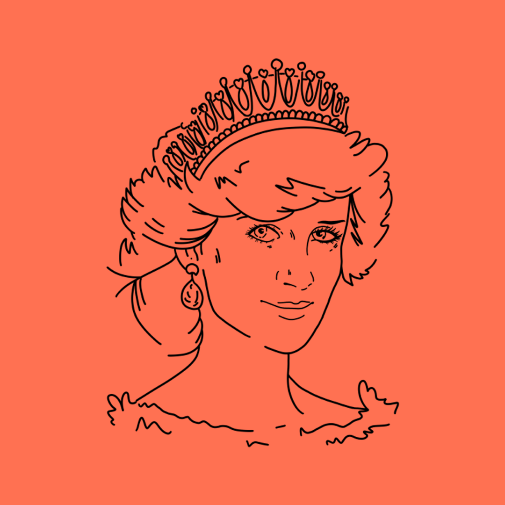

LADY DIANA
Lady diana
Icona di empatia e impegno umanitario
Nella luce dell’empatia
Lady Diana Spencer, la "Principessa del Popolo," è stata più di una figura di grazia e stile; il suo impegno per le cause sociali e umanitarie l'ha resa implicitamente un'icona del femminismo. Attraverso il suo ruolo nella famiglia reale britannica, Diana ha trasceso i rigidi protocolli monarchici, rifiutando di essere solo un ornamento e abbracciando attivamente le questioni sociali.
Mentre Diana manteneva un ruolo formale, il suo stile e atteggiamento rappresentavano un'evoluzione nei protocolli della monarchia. Si distinse per il suo impegno verso le questioni sociali e umanitarie, rompendo gli schemi tradizionali e dimostrando che una principessa poteva essere una forza positiva nel mondo.
Partecipando attivamente a numerose organizzazioni di beneficenza, Diana affrontò temi importanti come l'AIDS, la lebbra e la rimozione delle mine terrestri. Uno dei momenti più iconici fu la sua visita a un ospedale per pazienti con HIV/AIDS, sfatando pregiudizi e tabù. Questo gesto audace fu un'importante dimostrazione di empatia e sostegno, sfidando la discriminazione diffusa verso le persone con HIV/AIDS.
Pur senza definirsi femminista in senso tradizionale, l'impegno di Diana per le questioni umanitarie e sociali, unito alla sua volontà di sfidare le aspettative monarchiche, l'ha resa un'icona dell'empatia e della consapevolezza femminile. La sua eredità ispira le donne a utilizzare la loro influenza per affrontare questioni umanitarie e sociali, dimostrando che anche nelle posizioni più elevate, è possibile fare la differenza.